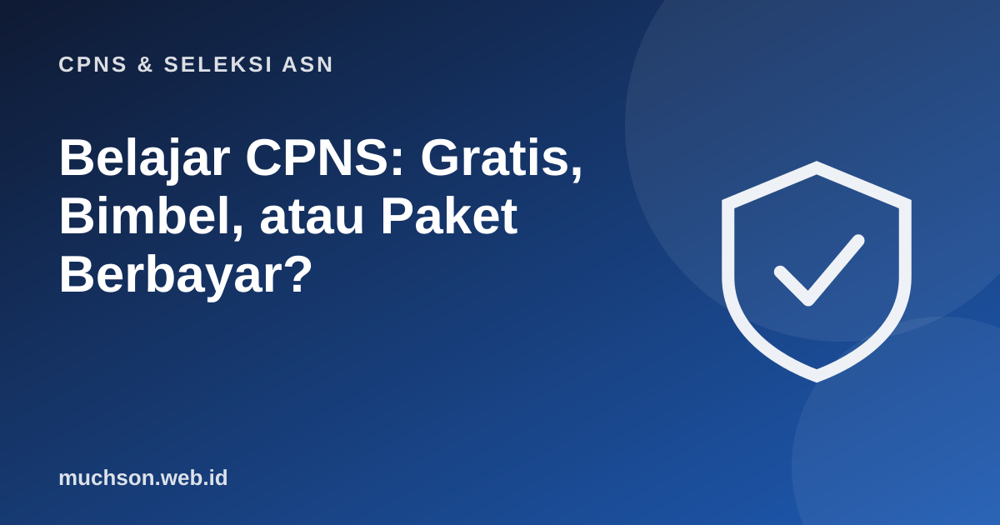

Beranda › Artikel › CPNS & Seleksi ASN
CPNS & Seleksi ASNBelajar CPNS: Gratis, Bimbel, atau Paket Berbayar?
Tidak ada satu pilihan yang paling benar untuk semua orang. Yang menentukan adalah apa yang Anda butuhkan: materi, latihan soal, simulasi penuh, atau pendampingan. Artikel ini membandingkan jalur gratis, bimbel, dan paket tryout berbayar dengan jujur, termasuk batasan LolosSeleksi sendiri, lalu memberi tes cepat untuk memilih.

Mulai dari apa yang sebenarnya Anda butuhkan
Deskripsi teks diagram
Sumbu mendatar: Butuh simulasi dan umpan balik lebih banyak. Sumbu tegak: Butuh pendampingan langsung.
- Kiri atas: Bimbel atau mentor: butuh pendampingan sekaligus banyak simulasi
- Kanan atas: Paket tryout dan bimbel: sudah disiplin, ingin umpan balik rinci
- Kiri bawah: Belajar mandiri gratis: disiplin sendiri, sumber gratis cukup
- Kanan bawah: Paket tryout berbayar: mandiri, tetapi butuh banyak simulasi penuh
Tiga jalur dan perbandingannya
| Jalur | Cocok untuk | Kelebihan | Perhatikan |
|---|---|---|---|
| Belajar mandiri gratis | Disiplin sendiri, anggaran terbatas | Biaya nol; fleksibel | Perlu rencana sendiri dan ukuran kemajuan |
| Bimbel atau kelas | Butuh jadwal, pengajar, dan lingkungan belajar | Struktur dan pendampingan | Biaya lebih besar; kualitas beragam; waspadai janji kelulusan |
| Paket tryout berbayar | Sudah paham materi, butuh banyak simulasi penuh | Banyak paket bertimer dengan rapor | Periksa apa yang sebenarnya ditambahkan dibanding yang gratis |
Yang sudah gratis di LolosSeleksi
Menurut halaman harga, sebagian besar isi situs gratis: 29 modul bab, 1.740 soal latihan berpembahasan, latihan harian 10 soal, tryout paket 1 untuk SKD, PPPK, dan BUMN dengan rapor PDF, PDF ringkas tiap bab, dan peta kemampuan. Untuk simulasi resmi dari pemerintah, gunakan juga simulasi di situs CAT BKN.
Yang berbayar, dan batasannya dengan jujur
- Paket tryout lanjutan. SKD paket 2 sampai 10, dan PPPK serta BUMN paket 2 sampai 3, termasuk rapor PDF tiap tryout.
- E-book PDF. Dijual terpisah atau termasuk paket.
- Kelas video. Masih tahap pra-pesan, jadi belum dibuka sebagai layanan reguler.
- Catatan jujur tentang soal. Paket tryout berbayar saat ini menyusun soal dari bank yang sama dengan latihan gratis, jadi nilai tambahnya ada pada paket ujian utuh yang tetap, penilaian server, rapor, dan peringkat, bukan pada soal eksklusif. Soal premium eksklusif masih direncanakan.
- Pembayaran. Lewat pesanan dengan kode unik dan konfirmasi WhatsApp; akses dibuka setelah admin mencocokkan pembayaran. Pengembalian dana dimungkinkan dalam 7 hari setelah pembayaran dikonfirmasi, sesuai kebijakan yang tertera.
Siapa pun yang menjanjikan "pasti lolos", "jalur dalam", atau "bocoran soal" menyesatkan. Seleksi memakai CAT BKN, dan pelamar yang membantu atau melakukan kecurangan dinyatakan gugur dan tidak boleh melamar penerimaan ASN (Pasal 50 PermenPANRB 6/2024).
Tes cepat: jalur mana yang cocok?
Cara paling aman memutuskan: coba dulu yang gratis. Tryout SKD pertama di LolosSeleksi gratis dan halaman harga menjelaskan isi tiap paket.
Tanya jawab
Apakah belajar gratis cukup untuk lolos SKD?
Apa bedanya paket berbayar dengan yang gratis di LolosSeleksi?
Bagaimana tahu bimbel itu terpercaya?
Apakah ada garansi lolos?
Apakah kelas video LolosSeleksi sudah tersedia?
Referensi
- Halaman harga LolosSeleksi: isi paket gratis dan berbayar (membuka tab baru)
- Halaman tryout CAT LolosSeleksi (membuka tab baru)
- Peraturan Menteri PANRB Nomor 6 Tahun 2024 tentang Pengadaan Pegawai ASN (teks resmi, BKN) (membuka tab baru)
- Setkab, 16 Oktober 2019: BKN mengingatkan modus penipuan jelang penerimaan CPNS (membuka tab baru)